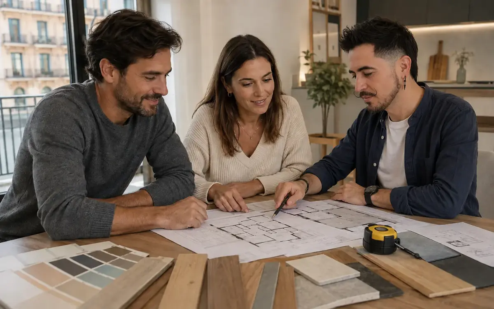
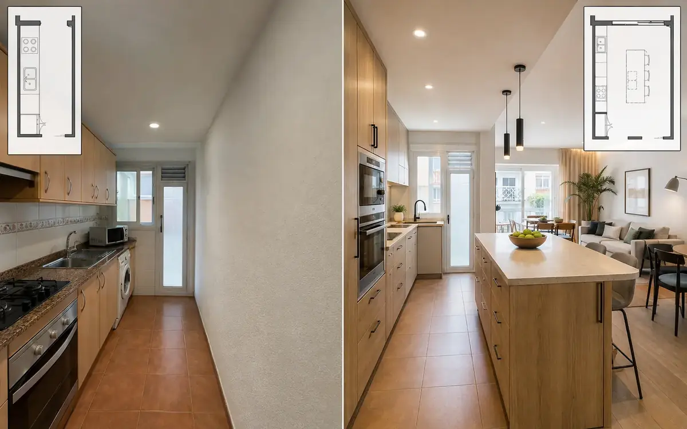
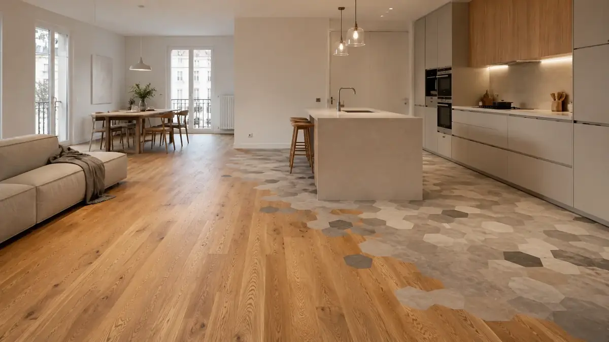

REFORMA ESENCIAL
Actualizar bien, priorizando lo necesario.
Una intervención centrada en funcionalidad, renovación de acabados y resolución de instalaciones o elementos que necesitan mejora.
- Prioridad al uso diario
- Materiales funcionales
- Control del alcance

REFORMA EQUILIBRADA
Diseño, prestaciones y presupuesto en equilibrio.
Redistribución, cocina, baño e instalaciones coordinadas con una selección de materiales de buena relación entre calidad, mantenimiento y resultado.
- Mejora de distribución
- Instalaciones coordinadas
- Acabados de gama media

REFORMA PREMIUM
Más detalle, integración y personalización.
Una reforma pensada como conjunto, con mayor atención a iluminación, carpintería, pavimentos, encuentros, mobiliario e integración visual.
- Mayor personalización
- Detalles de ejecución
- Acabados de nivel superior
Importante
Estas imágenes son referencias visuales de los tipos de intervención y no se presentan como obras ejecutadas por RSI. Las obras reales podrán incorporarse después con su ficha, zona y alcance.